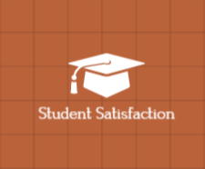
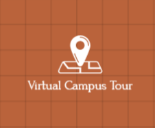
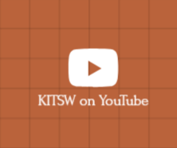
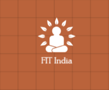
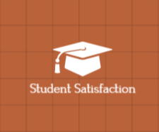
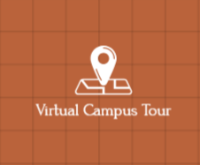
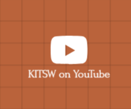
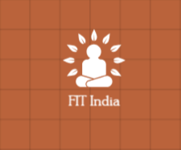

I2RE -
A force contributing to Societal progress
 







KITSW provides latest technical knowledge, analytical
and practical skills, managerial competence and interactive
abilities to students, so that their employability is enhanced.
KITSW provides a strong human resource base for catering
the changing needs of the Industry and Commerce.
KITSW inculcates a sense of brotherhood and national integrity.
Mr. M. Jagath Chandra of the CSE 2019-22
Batch got a GATE score of 750. Persued
M.Tech at IISc Bengaluru.
e-flip Magazine, a startup for magazine
articles related to Science and Tech.
The centre for Innovation, Incubation,
Research and Entrepreneurship.
Attaining centre of excellence status in
various fields of Computer Science and
Engineering
"
I love my college so much and recommend
it to everyone for happy
days and memories."
- M. Akash Via shiksha.com